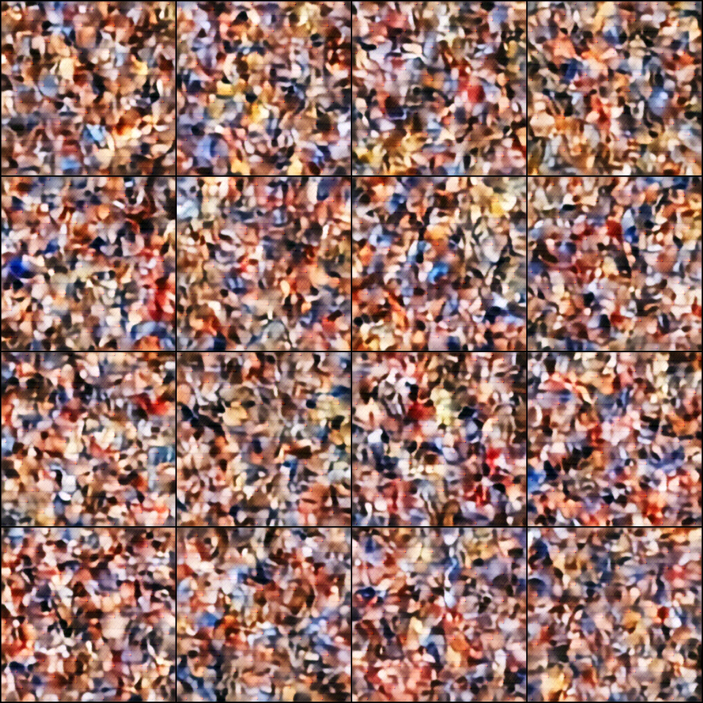
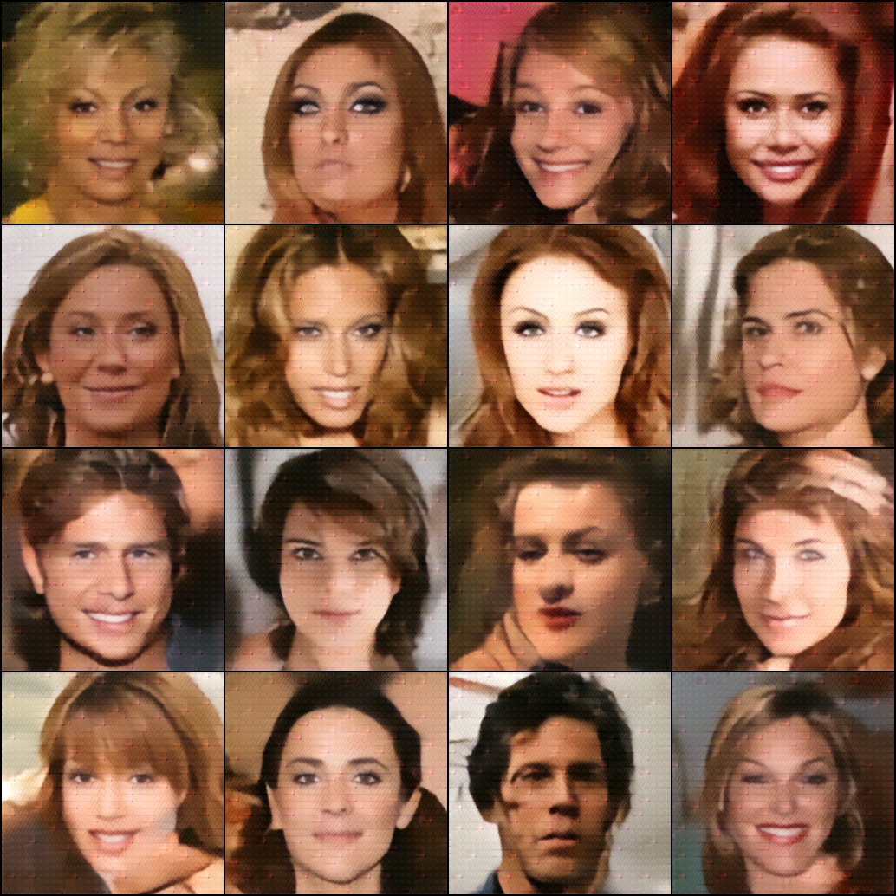
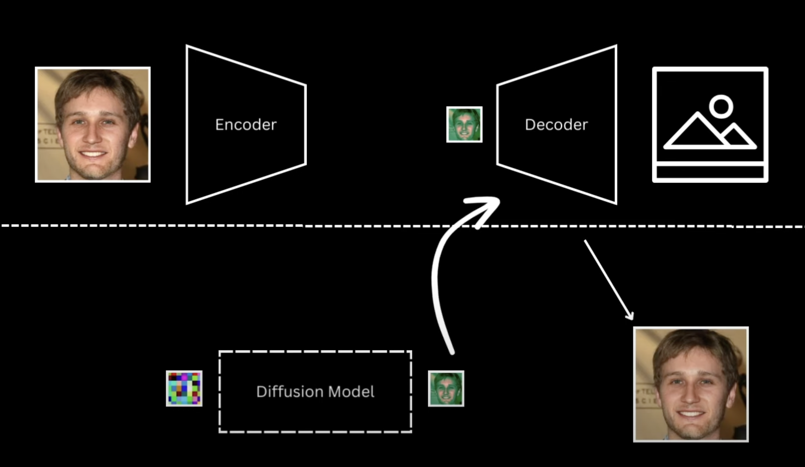
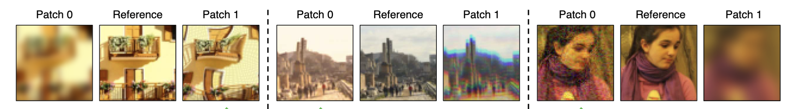
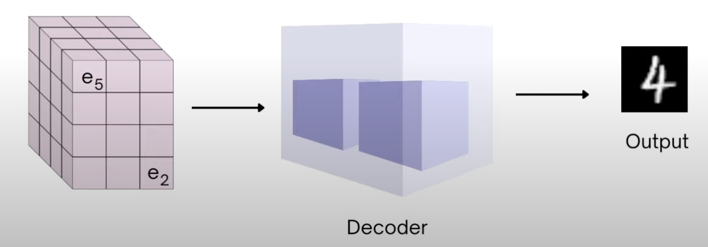

Implementing Latent Diffusion Models over CelebAHQ
Generative Models
Author
Guntas Singh Saran
Published
July 4, 2024
Final Generation
 
import osimport randomimport numpy as npimport torchimport torch.nn as nnimport torch.nn.parallelimport torch.nn.functional as Fimport torchvision.utils as vutilsfrom torch.utils.data import DataLoaderfrom torchvision import datasets, transforms, modelsfrom tqdm import tqdmfrom torch.utils.data.dataset import Datasetimport globimport picklefrom PIL import Imageimport matplotlib.pyplot as pltimport matplotlib.animation as animationfrom IPython.display import HTML%matplotlib inline%config InlineBackend.figure_format ="retina"if torch.cuda.is_available(): device = torch.device("cuda")else: device = torch.device("cpu")print(device)
cuda
Latent Diffusion Models
The idea is to train the diffusion models on a low dimensional latent representation rather than the entire big pixel space. In addition to that, also train an Encoder-Decoder model that takes the original image converts it into the latent representation using the encoder and reconverts the latent representation to the reconstructed image.

The downside is that although the \(L1/L2\) reconstruction loss might be low, the perceptual features in the reconstructed image still might be fuzzy
Perceptual Retention & \(\text{LPIPS}\) as the metric

CLearly as said that although the \(L_1\) or \(L_2\) reconstruction loss might be low for the image, yet the perceptual features in the image perceived by a human are still blurry. Now in order to understand how a model would perceive the image, there is no better place to dig into pretrained classification CNNs\(\to\)VGGs. The goal is to bring the feature map extracted at each VGG layer to be very similar to the original image’s feature maps at each VGG layer. This distance metric between the feature maps extracted from the layers of a pretrained VGG is called the perceptual loss.
The decoder then discards off the feature map given by the encoder and only uses the nearest codeblock feature map to reconstruct the output image.

The issue is we have to define the gradients for the \(\argmin\) step separately for the gradients to flow back. We approximate the gradient similar to the straight-through estimator and just copy gradients from decoder input \(z_q(x)\) to encoder output \(z_e(x)\)
# Time Embeddingdef get_time_embedding(T, d_model): factor =10000** ((torch.arange(start =0, end = d_model //2, dtype = torch.float32, device = T.device)) / (d_model //2)) t_emb = T[:, None].repeat(1, d_model //2) / factor t_emb = torch.cat([torch.sin(t_emb), torch.cos(t_emb)], dim =-1)return t_emb# Model Blocksclass DownBlock(nn.Module):r""" Down conv block with attention. Sequence of following block 1. Resnet block with time embedding 2. Attention block 3. Downsample """def__init__(self, in_channels, out_channels, t_emb_dim, down_sample, num_heads, num_layers, attn, norm_channels, cross_attn=False, context_dim=None):super().__init__()self.num_layers = num_layersself.down_sample = down_sampleself.attn = attnself.context_dim = context_dimself.cross_attn = cross_attnself.t_emb_dim = t_emb_dimself.resnet_conv_first = nn.ModuleList( [ nn.Sequential( nn.GroupNorm(norm_channels, in_channels if i ==0else out_channels), nn.SiLU(), nn.Conv2d(in_channels if i ==0else out_channels, out_channels, kernel_size=3, stride=1, padding=1), )for i inrange(num_layers) ] )ifself.t_emb_dim isnotNone:self.t_emb_layers = nn.ModuleList([ nn.Sequential( nn.SiLU(), nn.Linear(self.t_emb_dim, out_channels) )for _ inrange(num_layers) ])self.resnet_conv_second = nn.ModuleList( [ nn.Sequential( nn.GroupNorm(norm_channels, out_channels), nn.SiLU(), nn.Conv2d(out_channels, out_channels, kernel_size=3, stride=1, padding=1), )for _ inrange(num_layers) ] )ifself.attn:self.attention_norms = nn.ModuleList( [nn.GroupNorm(norm_channels, out_channels)for _ inrange(num_layers)] )self.attentions = nn.ModuleList( [nn.MultiheadAttention(out_channels, num_heads, batch_first=True)for _ inrange(num_layers)] )ifself.cross_attn:assert context_dim isnotNone, "Context Dimension must be passed for cross attention"self.cross_attention_norms = nn.ModuleList( [nn.GroupNorm(norm_channels, out_channels)for _ inrange(num_layers)] )self.cross_attentions = nn.ModuleList( [nn.MultiheadAttention(out_channels, num_heads, batch_first=True)for _ inrange(num_layers)] )self.context_proj = nn.ModuleList( [nn.Linear(context_dim, out_channels)for _ inrange(num_layers)] )self.residual_input_conv = nn.ModuleList( [ nn.Conv2d(in_channels if i ==0else out_channels, out_channels, kernel_size=1)for i inrange(num_layers) ] )self.down_sample_conv = nn.Conv2d(out_channels, out_channels,4, 2, 1) ifself.down_sample else nn.Identity()def forward(self, x, t_emb=None, context=None): out = xfor i inrange(self.num_layers):# Resnet block of Unet resnet_input = out out =self.resnet_conv_first[i](out)ifself.t_emb_dim isnotNone: out = out +self.t_emb_layers[i](t_emb)[:, :, None, None] out =self.resnet_conv_second[i](out) out = out +self.residual_input_conv[i](resnet_input)ifself.attn:# Attention block of Unet batch_size, channels, h, w = out.shape in_attn = out.reshape(batch_size, channels, h * w) in_attn =self.attention_norms[i](in_attn) in_attn = in_attn.transpose(1, 2) out_attn, _ =self.attentions[i](in_attn, in_attn, in_attn) out_attn = out_attn.transpose(1, 2).reshape(batch_size, channels, h, w) out = out + out_attnifself.cross_attn:assert context isnotNone, "context cannot be None if cross attention layers are used" batch_size, channels, h, w = out.shape in_attn = out.reshape(batch_size, channels, h * w) in_attn =self.cross_attention_norms[i](in_attn) in_attn = in_attn.transpose(1, 2)assert context.shape[0] == x.shape[0] and context.shape[-1] ==self.context_dim context_proj =self.context_proj[i](context) out_attn, _ =self.cross_attentions[i](in_attn, context_proj, context_proj) out_attn = out_attn.transpose(1, 2).reshape(batch_size, channels, h, w) out = out + out_attn# Downsample out =self.down_sample_conv(out)return outclass MidBlock(nn.Module):r""" Mid conv block with attention. Sequence of following blocks 1. Resnet block with time embedding 2. Attention block 3. Resnet block with time embedding """def__init__(self, in_channels, out_channels, t_emb_dim, num_heads, num_layers, norm_channels, cross_attn=None, context_dim=None):super().__init__()self.num_layers = num_layersself.t_emb_dim = t_emb_dimself.context_dim = context_dimself.cross_attn = cross_attnself.resnet_conv_first = nn.ModuleList( [ nn.Sequential( nn.GroupNorm(norm_channels, in_channels if i ==0else out_channels), nn.SiLU(), nn.Conv2d(in_channels if i ==0else out_channels, out_channels, kernel_size=3, stride=1, padding=1), )for i inrange(num_layers +1) ] )ifself.t_emb_dim isnotNone:self.t_emb_layers = nn.ModuleList([ nn.Sequential( nn.SiLU(), nn.Linear(t_emb_dim, out_channels) )for _ inrange(num_layers +1) ])self.resnet_conv_second = nn.ModuleList( [ nn.Sequential( nn.GroupNorm(norm_channels, out_channels), nn.SiLU(), nn.Conv2d(out_channels, out_channels, kernel_size=3, stride=1, padding=1), )for _ inrange(num_layers +1) ] )self.attention_norms = nn.ModuleList( [nn.GroupNorm(norm_channels, out_channels)for _ inrange(num_layers)] )self.attentions = nn.ModuleList( [nn.MultiheadAttention(out_channels, num_heads, batch_first=True)for _ inrange(num_layers)] )ifself.cross_attn:assert context_dim isnotNone, "Context Dimension must be passed for cross attention"self.cross_attention_norms = nn.ModuleList( [nn.GroupNorm(norm_channels, out_channels)for _ inrange(num_layers)] )self.cross_attentions = nn.ModuleList( [nn.MultiheadAttention(out_channels, num_heads, batch_first=True)for _ inrange(num_layers)] )self.context_proj = nn.ModuleList( [nn.Linear(context_dim, out_channels)for _ inrange(num_layers)] )self.residual_input_conv = nn.ModuleList( [ nn.Conv2d(in_channels if i ==0else out_channels, out_channels, kernel_size=1)for i inrange(num_layers +1) ] )def forward(self, x, t_emb=None, context=None): out = x# First resnet block resnet_input = out out =self.resnet_conv_first[0](out)ifself.t_emb_dim isnotNone: out = out +self.t_emb_layers[0](t_emb)[:, :, None, None] out =self.resnet_conv_second[0](out) out = out +self.residual_input_conv[0](resnet_input)for i inrange(self.num_layers):# Attention Block batch_size, channels, h, w = out.shape in_attn = out.reshape(batch_size, channels, h * w) in_attn =self.attention_norms[i](in_attn) in_attn = in_attn.transpose(1, 2) out_attn, _ =self.attentions[i](in_attn, in_attn, in_attn) out_attn = out_attn.transpose(1, 2).reshape(batch_size, channels, h, w) out = out + out_attnifself.cross_attn:assert context isnotNone, "context cannot be None if cross attention layers are used" batch_size, channels, h, w = out.shape in_attn = out.reshape(batch_size, channels, h * w) in_attn =self.cross_attention_norms[i](in_attn) in_attn = in_attn.transpose(1, 2)assert context.shape[0] == x.shape[0] and context.shape[-1] ==self.context_dim context_proj =self.context_proj[i](context) out_attn, _ =self.cross_attentions[i](in_attn, context_proj, context_proj) out_attn = out_attn.transpose(1, 2).reshape(batch_size, channels, h, w) out = out + out_attn# Resnet Block resnet_input = out out =self.resnet_conv_first[i +1](out)ifself.t_emb_dim isnotNone: out = out +self.t_emb_layers[i +1](t_emb)[:, :, None, None] out =self.resnet_conv_second[i +1](out) out = out +self.residual_input_conv[i +1](resnet_input)return outclass UpBlock(nn.Module):r""" Up conv block with attention. Sequence of following blocks 1. Upsample 1. Concatenate Down block output 2. Resnet block with time embedding 3. Attention Block """def__init__(self, in_channels, out_channels, t_emb_dim, up_sample, num_heads, num_layers, attn, norm_channels):super().__init__()self.num_layers = num_layersself.up_sample = up_sampleself.t_emb_dim = t_emb_dimself.attn = attnself.resnet_conv_first = nn.ModuleList( [ nn.Sequential( nn.GroupNorm(norm_channels, in_channels if i ==0else out_channels), nn.SiLU(), nn.Conv2d(in_channels if i ==0else out_channels, out_channels, kernel_size=3, stride=1, padding=1), )for i inrange(num_layers) ] )ifself.t_emb_dim isnotNone:self.t_emb_layers = nn.ModuleList([ nn.Sequential( nn.SiLU(), nn.Linear(t_emb_dim, out_channels) )for _ inrange(num_layers) ])self.resnet_conv_second = nn.ModuleList( [ nn.Sequential( nn.GroupNorm(norm_channels, out_channels), nn.SiLU(), nn.Conv2d(out_channels, out_channels, kernel_size=3, stride=1, padding=1), )for _ inrange(num_layers) ] )ifself.attn:self.attention_norms = nn.ModuleList( [ nn.GroupNorm(norm_channels, out_channels)for _ inrange(num_layers) ] )self.attentions = nn.ModuleList( [ nn.MultiheadAttention(out_channels, num_heads, batch_first=True)for _ inrange(num_layers) ] )self.residual_input_conv = nn.ModuleList( [ nn.Conv2d(in_channels if i ==0else out_channels, out_channels, kernel_size=1)for i inrange(num_layers) ] )self.up_sample_conv = nn.ConvTranspose2d(in_channels, in_channels,4, 2, 1) \ifself.up_sample else nn.Identity()def forward(self, x, out_down=None, t_emb=None):# Upsample x =self.up_sample_conv(x)# Concat with Downblock outputif out_down isnotNone: x = torch.cat([x, out_down], dim=1) out = xfor i inrange(self.num_layers):# Resnet Block resnet_input = out out =self.resnet_conv_first[i](out)ifself.t_emb_dim isnotNone: out = out +self.t_emb_layers[i](t_emb)[:, :, None, None] out =self.resnet_conv_second[i](out) out = out +self.residual_input_conv[i](resnet_input)# Self Attentionifself.attn: batch_size, channels, h, w = out.shape in_attn = out.reshape(batch_size, channels, h * w) in_attn =self.attention_norms[i](in_attn) in_attn = in_attn.transpose(1, 2) out_attn, _ =self.attentions[i](in_attn, in_attn, in_attn) out_attn = out_attn.transpose(1, 2).reshape(batch_size, channels, h, w) out = out + out_attnreturn outclass UpBlockUnet(nn.Module):r""" Up conv block with attention. Sequence of following blocks 1. Upsample 1. Concatenate Down block output 2. Resnet block with time embedding 3. Attention Block """def__init__(self, in_channels, out_channels, t_emb_dim, up_sample, num_heads, num_layers, norm_channels, cross_attn=False, context_dim=None):super().__init__()self.num_layers = num_layersself.up_sample = up_sampleself.t_emb_dim = t_emb_dimself.cross_attn = cross_attnself.context_dim = context_dimself.resnet_conv_first = nn.ModuleList( [ nn.Sequential( nn.GroupNorm(norm_channels, in_channels if i ==0else out_channels), nn.SiLU(), nn.Conv2d(in_channels if i ==0else out_channels, out_channels, kernel_size=3, stride=1, padding=1), )for i inrange(num_layers) ] )ifself.t_emb_dim isnotNone:self.t_emb_layers = nn.ModuleList([ nn.Sequential( nn.SiLU(), nn.Linear(t_emb_dim, out_channels) )for _ inrange(num_layers) ])self.resnet_conv_second = nn.ModuleList( [ nn.Sequential( nn.GroupNorm(norm_channels, out_channels), nn.SiLU(), nn.Conv2d(out_channels, out_channels, kernel_size=3, stride=1, padding=1), )for _ inrange(num_layers) ] )self.attention_norms = nn.ModuleList( [ nn.GroupNorm(norm_channels, out_channels)for _ inrange(num_layers) ] )self.attentions = nn.ModuleList( [ nn.MultiheadAttention(out_channels, num_heads, batch_first=True)for _ inrange(num_layers) ] )ifself.cross_attn:assert context_dim isnotNone, "Context Dimension must be passed for cross attention"self.cross_attention_norms = nn.ModuleList( [nn.GroupNorm(norm_channels, out_channels)for _ inrange(num_layers)] )self.cross_attentions = nn.ModuleList( [nn.MultiheadAttention(out_channels, num_heads, batch_first=True)for _ inrange(num_layers)] )self.context_proj = nn.ModuleList( [nn.Linear(context_dim, out_channels)for _ inrange(num_layers)] )self.residual_input_conv = nn.ModuleList( [ nn.Conv2d(in_channels if i ==0else out_channels, out_channels, kernel_size=1)for i inrange(num_layers) ] )self.up_sample_conv = nn.ConvTranspose2d(in_channels //2, in_channels //2,4, 2, 1) \ifself.up_sample else nn.Identity()def forward(self, x, out_down=None, t_emb=None, context=None): x =self.up_sample_conv(x)if out_down isnotNone: x = torch.cat([x, out_down], dim=1) out = xfor i inrange(self.num_layers):# Resnet resnet_input = out out =self.resnet_conv_first[i](out)ifself.t_emb_dim isnotNone: out = out +self.t_emb_layers[i](t_emb)[:, :, None, None] out =self.resnet_conv_second[i](out) out = out +self.residual_input_conv[i](resnet_input)# Self Attention batch_size, channels, h, w = out.shape in_attn = out.reshape(batch_size, channels, h * w) in_attn =self.attention_norms[i](in_attn) in_attn = in_attn.transpose(1, 2) out_attn, _ =self.attentions[i](in_attn, in_attn, in_attn) out_attn = out_attn.transpose(1, 2).reshape(batch_size, channels, h, w) out = out + out_attn# Cross Attentionifself.cross_attn:assert context isnotNone, "context cannot be None if cross attention layers are used" batch_size, channels, h, w = out.shape in_attn = out.reshape(batch_size, channels, h * w) in_attn =self.cross_attention_norms[i](in_attn) in_attn = in_attn.transpose(1, 2)assertlen(context.shape) ==3, \"Context shape does not match B,_,CONTEXT_DIM"assert context.shape[0] == x.shape[0] and context.shape[-1] ==self.context_dim,\"Context shape does not match B,_,CONTEXT_DIM" context_proj =self.context_proj[i](context) out_attn, _ =self.cross_attentions[i](in_attn, context_proj, context_proj) out_attn = out_attn.transpose(1, 2).reshape(batch_size, channels, h, w) out = out + out_attnreturn out
VQVAE Implementation
class VQVAE(nn.Module):def__init__(self):super().__init__() im_channels =3self.down_channels = [64, 128, 256, 256]self.mid_channels = [256, 256]self.down_sample = [True, True, True]self.num_down_layers =2self.num_mid_layers =2self.num_up_layers =2self.norm_channels =32# To disable attention in the DownBlock of Encoder and UpBlock of Decoderself.attns = [False, False, False]self.num_heads =4# Latent Dimensionself.z_channels =3self.codebook_size =8192# Wherever we use downsampling in encoder correspondingly use# upsampling in decoderself.up_sample =list(reversed(self.down_sample))##################### Encoder ######################self.encoder_conv_in = nn.Conv2d(im_channels, self.down_channels[0], kernel_size=3, padding=(1, 1))# Downblock + Midblockself.encoder_layers = nn.ModuleList([])for i inrange(len(self.down_channels) -1):self.encoder_layers.append(DownBlock(self.down_channels[i], self.down_channels[i +1], t_emb_dim=None, down_sample=self.down_sample[i], num_heads=self.num_heads, num_layers=self.num_down_layers, attn=self.attns[i], norm_channels=self.norm_channels))self.encoder_mids = nn.ModuleList([])for i inrange(len(self.mid_channels) -1):self.encoder_mids.append(MidBlock(self.mid_channels[i], self.mid_channels[i +1], t_emb_dim=None, num_heads=self.num_heads, num_layers=self.num_mid_layers, norm_channels=self.norm_channels))self.encoder_norm_out = nn.GroupNorm(self.norm_channels, self.down_channels[-1])self.encoder_conv_out = nn.Conv2d(self.down_channels[-1], self.z_channels, kernel_size=3, padding=1)# Pre Quantization Convolutionself.pre_quant_conv = nn.Conv2d(self.z_channels, self.z_channels, kernel_size=1)# Codebookself.embedding = nn.Embedding(self.codebook_size, self.z_channels)######################################################################### Decoder ####################### Post Quantization Convolutionself.post_quant_conv = nn.Conv2d(self.z_channels, self.z_channels, kernel_size=1)self.decoder_conv_in = nn.Conv2d(self.z_channels, self.mid_channels[-1], kernel_size=3, padding=(1, 1))# Midblock + Upblockself.decoder_mids = nn.ModuleList([])for i inreversed(range(1, len(self.mid_channels))):self.decoder_mids.append(MidBlock(self.mid_channels[i], self.mid_channels[i -1], t_emb_dim=None, num_heads=self.num_heads, num_layers=self.num_mid_layers, norm_channels=self.norm_channels))self.decoder_layers = nn.ModuleList([])for i inreversed(range(1, len(self.down_channels))):self.decoder_layers.append(UpBlock(self.down_channels[i], self.down_channels[i -1], t_emb_dim=None, up_sample=self.down_sample[i -1], num_heads=self.num_heads, num_layers=self.num_up_layers, attn=self.attns[i-1], norm_channels=self.norm_channels))self.decoder_norm_out = nn.GroupNorm(self.norm_channels, self.down_channels[0])self.decoder_conv_out = nn.Conv2d(self.down_channels[0], im_channels, kernel_size=3, padding=1)def quantize(self, x): B, C, H, W = x.shape# B, C, H, W -> B, H, W, C x = x.permute(0, 2, 3, 1)# B, H, W, C -> B, H*W, C x = x.reshape(x.size(0), -1, x.size(-1))# Find nearest embedding/codebook vector# dist between (B, H*W, C) and (B, K, C) -> (B, H*W, K) dist = torch.cdist(x, self.embedding.weight[None, :].repeat((x.size(0), 1, 1)))# (B, H*W) min_encoding_indices = torch.argmin(dist, dim=-1)# Replace encoder output with nearest codebook# quant_out -> B*H*W, C quant_out = torch.index_select(self.embedding.weight, 0, min_encoding_indices.view(-1))# x -> B*H*W, C x = x.reshape((-1, x.size(-1))) commmitment_loss = torch.mean((quant_out.detach() - x) **2) codebook_loss = torch.mean((quant_out - x.detach()) **2) quantize_losses = {'codebook_loss': codebook_loss,'commitment_loss': commmitment_loss }# Straight through estimation quant_out = x + (quant_out - x).detach()# quant_out -> B, C, H, W quant_out = quant_out.reshape((B, H, W, C)).permute(0, 3, 1, 2) min_encoding_indices = min_encoding_indices.reshape((-1, quant_out.size(-2), quant_out.size(-1)))return quant_out, quantize_losses, min_encoding_indicesdef encode(self, x): out =self.encoder_conv_in(x)for idx, down inenumerate(self.encoder_layers): out = down(out)for mid inself.encoder_mids: out = mid(out) out =self.encoder_norm_out(out) out = nn.SiLU()(out) out =self.encoder_conv_out(out) out =self.pre_quant_conv(out) out, quant_losses, _ =self.quantize(out)return out, quant_lossesdef decode(self, z): out = z out =self.post_quant_conv(out) out =self.decoder_conv_in(out)for mid inself.decoder_mids: out = mid(out)for idx, up inenumerate(self.decoder_layers): out = up(out) out =self.decoder_norm_out(out) out = nn.SiLU()(out) out =self.decoder_conv_out(out)return outdef forward(self, x): z, quant_losses =self.encode(x) out =self.decode(z)return out, z, quant_losses
Discriminator
class Discriminator(nn.Module):r""" PatchGAN Discriminator. Rather than taking IMG_CHANNELSxIMG_HxIMG_W all the way to 1 scalar value , we instead predict grid of values. Where each grid is prediction of how likely the discriminator thinks that the image patch corresponding to the grid cell is real """def__init__(self, im_channels=3, conv_channels=[64, 128, 256], kernels=[4,4,4,4], strides=[2,2,2,1], paddings=[1,1,1,1]):super().__init__()self.im_channels = im_channels activation = nn.LeakyReLU(0.2) layers_dim = [self.im_channels] + conv_channels + [1]self.layers = nn.ModuleList([ nn.Sequential( nn.Conv2d(layers_dim[i], layers_dim[i +1], kernel_size=kernels[i], stride=strides[i], padding=paddings[i], bias=Falseif i !=0elseTrue), nn.BatchNorm2d(layers_dim[i +1]) if i !=len(layers_dim) -2and i !=0else nn.Identity(), activation if i !=len(layers_dim) -2else nn.Identity() )for i inrange(len(layers_dim) -1) ])def forward(self, x): out = xfor layer inself.layers: out = layer(out)return out
Loading Dataset - CelebAHQ
def load_latents(latent_path):r""" Simple utility to save latents to speed up ldm training :param latent_path: :return: """ latent_maps = {}for fname in glob.glob(os.path.join(latent_path, '*.pkl')): s = pickle.load(open(fname, 'rb'))for k, v in s.items(): latent_maps[k] = v[0]return latent_mapsclass CelebDataset(Dataset):r""" Celeb dataset will by default centre crop and resize the images. This can be replaced by any other dataset. As long as all the images are under one directory. """def__init__(self, split, im_path, im_size=256, im_channels=3, im_ext='jpg', use_latents=False, latent_path=None, condition_config=None):self.split = splitself.im_size = im_sizeself.im_channels = im_channelsself.im_ext = im_extself.im_path = im_pathself.latent_maps =Noneself.use_latents =Falseself.condition_types = [] if condition_config isNoneelse condition_config['condition_types']self.idx_to_cls_map = {}self.cls_to_idx_map ={}if'image'inself.condition_types:self.mask_channels = condition_config['image_condition_config']['image_condition_input_channels']self.mask_h = condition_config['image_condition_config']['image_condition_h']self.mask_w = condition_config['image_condition_config']['image_condition_w']self.images, self.texts, self.masks =self.load_images(im_path)# Whether to load images or to load latentsif use_latents and latent_path isnotNone: latent_maps = load_latents(latent_path)iflen(latent_maps) ==len(self.images):self.use_latents =Trueself.latent_maps = latent_mapsprint('Found {} latents'.format(len(self.latent_maps)))else:print('Latents not found')def load_images(self, im_path):r""" Gets all images from the path specified and stacks them all up """assert os.path.exists(im_path), "images path {} does not exist".format(im_path) ims = [] fnames = glob.glob(os.path.join(im_path, 'CelebA-HQ-img/*.{}'.format('png'))) fnames += glob.glob(os.path.join(im_path, 'CelebA-HQ-img/*.{}'.format('jpg'))) fnames += glob.glob(os.path.join(im_path, 'CelebA-HQ-img/*.{}'.format('jpeg'))) texts = [] masks = []if'image'inself.condition_types: label_list = ['skin', 'nose', 'eye_g', 'l_eye', 'r_eye', 'l_brow', 'r_brow', 'l_ear', 'r_ear', 'mouth','u_lip', 'l_lip', 'hair', 'hat', 'ear_r', 'neck_l', 'neck', 'cloth']self.idx_to_cls_map = {idx: label_list[idx] for idx inrange(len(label_list))}self.cls_to_idx_map = {label_list[idx]: idx for idx inrange(len(label_list))}for fname in tqdm(fnames): ims.append(fname)if'text'inself.condition_types: im_name = os.path.split(fname)[1].split('.')[0] captions_im = []withopen(os.path.join(im_path, 'celeba-caption/{}.txt'.format(im_name))) as f:for line in f.readlines(): captions_im.append(line.strip()) texts.append(captions_im)if'image'inself.condition_types: im_name =int(os.path.split(fname)[1].split('.')[0]) masks.append(os.path.join(im_path, 'CelebAMask-HQ-mask', '{}.png'.format(im_name)))if'text'inself.condition_types:assertlen(texts) ==len(ims), "Condition Type Text but could not find captions for all images"if'image'inself.condition_types:assertlen(masks) ==len(ims), "Condition Type Image but could not find masks for all images"print('Found {} images'.format(len(ims)))print('Found {} masks'.format(len(masks)))print('Found {} captions'.format(len(texts)))return ims, texts, masksdef get_mask(self, index):r""" Method to get the mask of WxH for given index and convert it into Classes x W x H mask image :param index: :return: """ mask_im = Image.open(self.masks[index]) mask_im = np.array(mask_im) im_base = np.zeros((self.mask_h, self.mask_w, self.mask_channels))for orig_idx inrange(len(self.idx_to_cls_map)): im_base[mask_im == (orig_idx+1), orig_idx] =1 mask = torch.from_numpy(im_base).permute(2, 0, 1).float()return maskdef__len__(self):returnlen(self.images)def__getitem__(self, index):######## Set Conditioning Info ######## cond_inputs = {}if'text'inself.condition_types: cond_inputs['text'] = random.sample(self.texts[index], k=1)[0]if'image'inself.condition_types: mask =self.get_mask(index) cond_inputs['image'] = mask#######################################ifself.use_latents: latent =self.latent_maps[self.images[index]]iflen(self.condition_types) ==0:return latentelse:return latent, cond_inputselse: im = Image.open(self.images[index]) im_tensor = transforms.Compose([ transforms.Resize(self.im_size), transforms.CenterCrop(self.im_size), transforms.ToTensor(), ])(im) im.close()# Convert input to -1 to 1 range. im_tensor = (2* im_tensor) -1iflen(self.condition_types) ==0:return im_tensorelse:return im_tensor, cond_inputs
\(\texttt{im\_dataset}\) contains \(30000\) images of shape \((3 \times 256 \times 256) \to (C \times H \times W)\)
\(\texttt{celebALoader}\) creates a dataloader of \(\texttt{batch\_size} = 8\) i.e. each object in this loader is of shape \((8 \times 3 \times 256 \times 256) \to (B \times C \times H \times W)\) and there are \(30000 / 8 = 3750\) such objects
/home/cvig/miniconda3/envs/PyTorchG/lib/python3.11/site-packages/torchvision/models/_utils.py:208: UserWarning: The parameter 'pretrained' is deprecated since 0.13 and may be removed in the future, please use 'weights' instead.
warnings.warn(
/home/cvig/miniconda3/envs/PyTorchG/lib/python3.11/site-packages/torchvision/models/_utils.py:223: UserWarning: Arguments other than a weight enum or `None` for 'weights' are deprecated since 0.13 and may be removed in the future. The current behavior is equivalent to passing `weights=VGG16_Weights.IMAGENET1K_V1`. You can also use `weights=VGG16_Weights.DEFAULT` to get the most up-to-date weights.
warnings.warn(msg)
100%|██████████| 3750/3750 [16:43<00:00, 3.74it/s]
100%|██████████| 3750/3750 [16:46<00:00, 3.72it/s]
100%|██████████| 3750/3750 [16:39<00:00, 3.75it/s]
100%|██████████| 3750/3750 [16:41<00:00, 3.74it/s]
100%|██████████| 3750/3750 [23:59<00:00, 2.60it/s]
100%|██████████| 3750/3750 [24:01<00:00, 2.60it/s]
100%|██████████| 3750/3750 [24:02<00:00, 2.60it/s]
100%|██████████| 3750/3750 [24:04<00:00, 2.60it/s]
100%|██████████| 3750/3750 [24:03<00:00, 2.60it/s]
100%|██████████| 3750/3750 [24:03<00:00, 2.60it/s]
100%|██████████| 3750/3750 [24:01<00:00, 2.60it/s]
100%|██████████| 3750/3750 [24:03<00:00, 2.60it/s]
100%|██████████| 3750/3750 [24:04<00:00, 2.60it/s]
100%|██████████| 3750/3750 [24:02<00:00, 2.60it/s]
100%|██████████| 3750/3750 [24:01<00:00, 2.60it/s]
100%|██████████| 3750/3750 [24:03<00:00, 2.60it/s]
100%|██████████| 3750/3750 [24:02<00:00, 2.60it/s]
100%|██████████| 3750/3750 [24:02<00:00, 2.60it/s]
100%|██████████| 3750/3750 [24:00<00:00, 2.60it/s]
100%|██████████| 3750/3750 [24:03<00:00, 2.60it/s]
Finished epoch: 1 | Recon Loss : 0.0444 | Perceptual Loss : -0.0079 | Codebook : 0.0024
Finished epoch: 2 | Recon Loss : 0.0274 | Perceptual Loss : -0.0099 | Codebook : 0.0012
Finished epoch: 3 | Recon Loss : 0.0187 | Perceptual Loss : -0.0102 | Codebook : 0.0016
Finished epoch: 4 | Recon Loss : 0.0153 | Perceptual Loss : -0.0104 | Codebook : 0.0013
Finished epoch: 5 | Recon Loss : 0.0135 | Perceptual Loss : -0.0107 | Codebook : 0.0011 | G Loss : 0.9127 | D Loss 0.1442
Finished epoch: 6 | Recon Loss : 0.0126 | Perceptual Loss : -0.0110 | Codebook : 0.0009 | G Loss : 1.9146 | D Loss 0.0166
Finished epoch: 7 | Recon Loss : 0.0119 | Perceptual Loss : -0.0113 | Codebook : 0.0008 | G Loss : 2.4890 | D Loss 0.0052
Finished epoch: 8 | Recon Loss : 0.0117 | Perceptual Loss : -0.0118 | Codebook : 0.0008 | G Loss : 2.8359 | D Loss 0.0040
Finished epoch: 9 | Recon Loss : 0.0111 | Perceptual Loss : -0.0124 | Codebook : 0.0008 | G Loss : 3.0382 | D Loss 0.0018
Finished epoch: 10 | Recon Loss : 0.0108 | Perceptual Loss : -0.0131 | Codebook : 0.0007 | G Loss : 3.1862 | D Loss 0.0014
Finished epoch: 11 | Recon Loss : 0.0105 | Perceptual Loss : -0.0139 | Codebook : 0.0007 | G Loss : 3.3179 | D Loss 0.0012
Finished epoch: 12 | Recon Loss : 0.0102 | Perceptual Loss : -0.0146 | Codebook : 0.0007 | G Loss : 3.5116 | D Loss 0.0008
Finished epoch: 13 | Recon Loss : 0.0100 | Perceptual Loss : -0.0150 | Codebook : 0.0007 | G Loss : 3.7793 | D Loss 0.0005
Finished epoch: 14 | Recon Loss : 0.0098 | Perceptual Loss : -0.0153 | Codebook : 0.0007 | G Loss : 3.9513 | D Loss 0.0041
Finished epoch: 15 | Recon Loss : 0.0096 | Perceptual Loss : -0.0156 | Codebook : 0.0006 | G Loss : 3.6160 | D Loss 0.0009
Finished epoch: 16 | Recon Loss : 0.0095 | Perceptual Loss : -0.0158 | Codebook : 0.0006 | G Loss : 3.9615 | D Loss 0.0004
Finished epoch: 17 | Recon Loss : 0.0094 | Perceptual Loss : -0.0160 | Codebook : 0.0006 | G Loss : 4.0736 | D Loss 0.0003
Finished epoch: 18 | Recon Loss : 0.0093 | Perceptual Loss : -0.0161 | Codebook : 0.0006 | G Loss : 4.1628 | D Loss 0.0003
Finished epoch: 19 | Recon Loss : 0.0091 | Perceptual Loss : -0.0162 | Codebook : 0.0006 | G Loss : 4.2656 | D Loss 0.0002
Finished epoch: 20 | Recon Loss : 0.0090 | Perceptual Loss : -0.0164 | Codebook : 0.0006 | G Loss : 4.3928 | D Loss 0.0002
Found 30000 images
Found 0 masks
Found 0 captions
Done saving latents
Latent Diffusion Model Architecture
UNet
class Unet(nn.Module):def__init__(self, im_channels =3):super().__init__()self.down_channels = [256, 384, 512, 768]self.mid_channels = [768, 512]self.t_emb_dim =512self.down_sample = [True, True, True]self.num_down_layers =2self.num_mid_layers =2self.num_up_layers =2self.attns = [True, True, True]self.norm_channels =32self.num_heads =16self.conv_out_channels =128# Initial projection from sinusoidal time embeddingself.t_proj = nn.Sequential( nn.Linear(self.t_emb_dim, self.t_emb_dim), nn.SiLU(), nn.Linear(self.t_emb_dim, self.t_emb_dim) )self.up_sample =list(reversed(self.down_sample))self.conv_in = nn.Conv2d(im_channels, self.down_channels[0], kernel_size =3, padding =1)self.downs = nn.ModuleList([])for i inrange(len(self.down_channels) -1):self.downs.append(DownBlock(self.down_channels[i], self.down_channels[i +1], t_emb_dim =self.t_emb_dim, down_sample =self.down_sample[i], num_heads =self.num_heads, num_layers =self.num_down_layers, attn =self.attns[i], norm_channels =self.norm_channels))self.mids = nn.ModuleList([])for i inrange(len(self.mid_channels) -1):self.mids.append(MidBlock(self.mid_channels[i], self.mid_channels[i +1], t_emb_dim =self.t_emb_dim, num_heads =self.num_heads, num_layers =self.num_mid_layers, norm_channels =self.norm_channels))self.ups = nn.ModuleList([])for i inreversed(range(len(self.down_channels) -1)):self.ups.append(UpBlockUnet(self.down_channels[i] *2, self.down_channels[i -1] if i !=0elseself.conv_out_channels,self.t_emb_dim, up_sample =self.down_sample[i], num_heads =self.num_heads, num_layers =self.num_up_layers, norm_channels =self.norm_channels))self.norm_out = nn.GroupNorm(self.norm_channels, self.conv_out_channels)self.conv_out = nn.Conv2d(self.conv_out_channels, im_channels, kernel_size =3, padding =1)def forward(self, x, t):# Shapes assuming downblocks are [C1, C2, C3, C4]# Shapes assuming midblocks are [C4, C4, C3]# Shapes assuming downsamples are [True, True, False]# B x C x H x W out =self.conv_in(x)# B x C1 x H x W# t_emb -> B x t_emb_dim t_emb = get_time_embedding(torch.as_tensor(t).long(), self.t_emb_dim) t_emb =self.t_proj(t_emb) down_outs = []for idx, down inenumerate(self.downs): down_outs.append(out) out = down(out, t_emb)# down_outs [B x C1 x H x W, B x C2 x H/2 x W/2, B x C3 x H/4 x W/4]# out B x C4 x H/4 x W/4for mid inself.mids: out = mid(out, t_emb)# out B x C3 x H/4 x W/4for up inself.ups: down_out = down_outs.pop() out = up(out, down_out, t_emb)# out [B x C2 x H/4 x W/4, B x C1 x H/2 x W/2, B x 16 x H x W] out =self.norm_out(out) out = nn.SiLU()(out) out =self.conv_out(out)# out B x C x H x Wreturn out
Linear Noise Scheduler
class LinearNoiseScheduler:r""" Class for the linear noise scheduler that is used in DDPM. """def__init__(self, num_timesteps, beta_start, beta_end):self.num_timesteps = num_timestepsself.beta_start = beta_startself.beta_end = beta_end# Mimicking how compvis repo creates scheduleself.betas = ( torch.linspace(beta_start **0.5, beta_end **0.5, num_timesteps) **2 )self.alphas =1.-self.betasself.alpha_cum_prod = torch.cumprod(self.alphas, dim=0)self.sqrt_alpha_cum_prod = torch.sqrt(self.alpha_cum_prod)self.sqrt_one_minus_alpha_cum_prod = torch.sqrt(1-self.alpha_cum_prod)def add_noise(self, original, noise, t):r""" Forward method for diffusion :param original: Image on which noise is to be applied :param noise: Random Noise Tensor (from normal dist) :param t: timestep of the forward process of shape -> (B,) :return: """ original_shape = original.shape batch_size = original_shape[0] sqrt_alpha_cum_prod =self.sqrt_alpha_cum_prod.to(original.device)[t].reshape(batch_size) sqrt_one_minus_alpha_cum_prod =self.sqrt_one_minus_alpha_cum_prod.to(original.device)[t].reshape(batch_size)# Reshape till (B,) becomes (B,1,1,1) if image is (B,C,H,W)for _ inrange(len(original_shape) -1): sqrt_alpha_cum_prod = sqrt_alpha_cum_prod.unsqueeze(-1)for _ inrange(len(original_shape) -1): sqrt_one_minus_alpha_cum_prod = sqrt_one_minus_alpha_cum_prod.unsqueeze(-1)# Apply and Return Forward process equationreturn (sqrt_alpha_cum_prod.to(original.device) * original+ sqrt_one_minus_alpha_cum_prod.to(original.device) * noise)def sample_prev_timestep(self, xt, noise_pred, t):r""" Use the noise prediction by model to get xt-1 using xt and the nosie predicted :param xt: current timestep sample :param noise_pred: model noise prediction :param t: current timestep we are at :return: """ x0 = ((xt - (self.sqrt_one_minus_alpha_cum_prod.to(xt.device)[t] * noise_pred)) / torch.sqrt(self.alpha_cum_prod.to(xt.device)[t])) x0 = torch.clamp(x0, -1., 1.) mean = xt - ((self.betas.to(xt.device)[t]) * noise_pred) / (self.sqrt_one_minus_alpha_cum_prod.to(xt.device)[t]) mean = mean / torch.sqrt(self.alphas.to(xt.device)[t])if t ==0:return mean, x0else: variance = (1-self.alpha_cum_prod.to(xt.device)[t -1]) / (1.0-self.alpha_cum_prod.to(xt.device)[t]) variance = variance *self.betas.to(xt.device)[t] sigma = variance **0.5 z = torch.randn(xt.shape).to(xt.device)return mean + sigma * z, x0